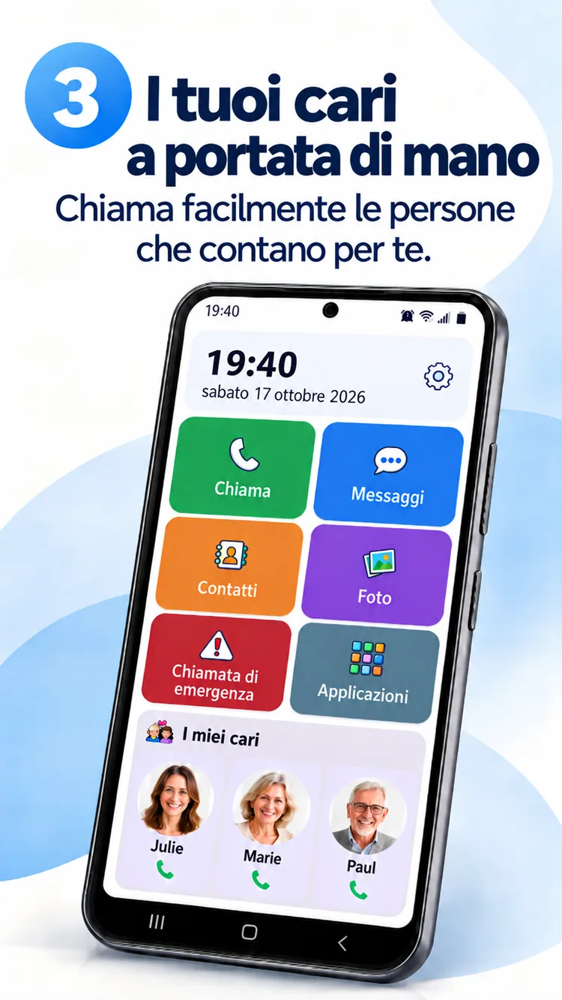
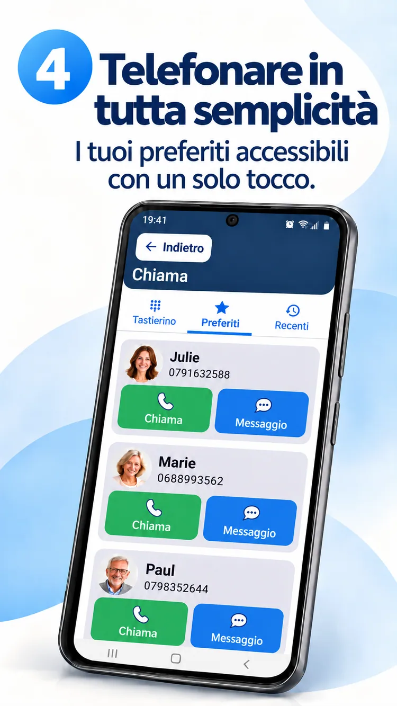
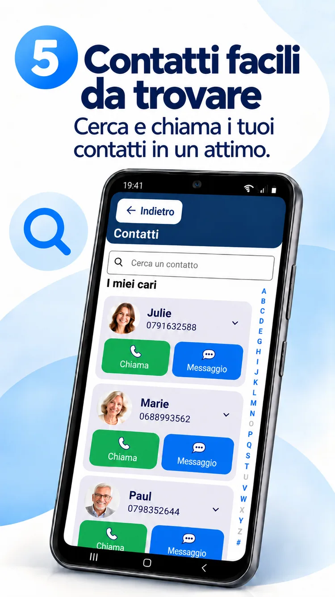
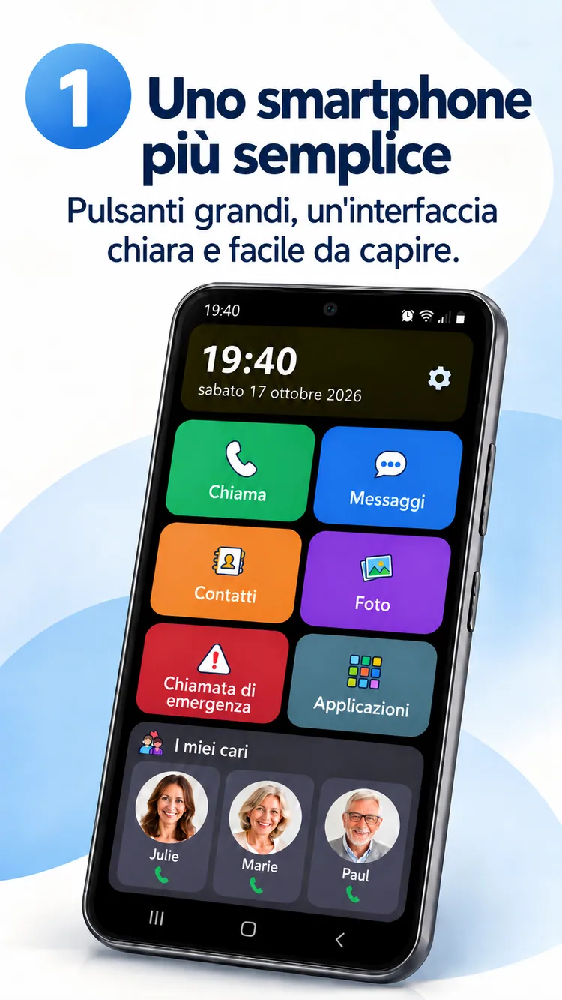

01
Una foto. Una chiamata.
Le persone care sempre vicine.


Una schermata Android più facile, le persone care sempre vicine e più libertà di vivere ciò che conta.
ClikoSpido trasforma la schermata iniziale di un Android compatibile in uno spazio chiaro, familiare e personalizzabile. Meno dubbi, più autonomia.
Pulsanti grandi, azioni utili e spazio per ciò che conta.

Chiamate, messaggi, contatti, foto, fotocamera e scorciatoia di emergenza.
Immagine promozionale illustrativa: l’interfaccia installata può variare.
Le persone care sempre vicine.

Tastierino grande e comandi leggibili.

Foto e ricerca alfabetica.

Un familiare può regolare la visualizzazione, scegliere le app consentite e proteggere alcune impostazioni con un PIN.
Scopri gli otto visual promozionali nella tua lingua.

Scopri ClikoSpido con un breve video nella tua lingua.
Avvia il videoRisposte semplici prima di iniziare.
Sì, sugli smartphone Android compatibili, come launcher predefinito.
No. Puoi rendere più semplice un Android compatibile già in uso.
No. Il pulsante Messaggi apre l’app di messaggistica esistente.
No. Chiama un contatto impostato ma non sostituisce i servizi di emergenza.
Un’interfaccia progettata per facilitare la quotidianità.
Torna all’inizio